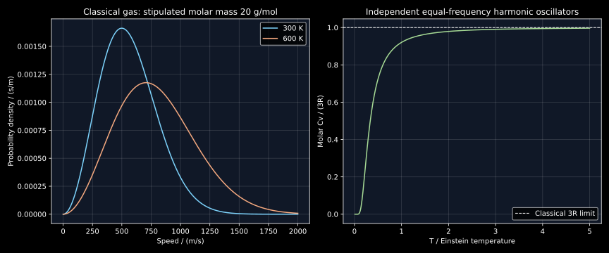

6. Thermodynamic states, molecular energy and heat capacity
A stationary specimen need not be in equilibrium, two liquids at different temperatures need not be in the same thermodynamic state, and a hot body does not contain a quantity of “heat.” These distinctions become operational when constructing a model: they determine which variables specify a state, which measurements constrain an energy function and which formulas can be transported from a dilute gas to a solid.
Complete local transcripts of lessons 11–12 were read sequentially. Their spine runs from thermodynamic scope and system boundaries to equilibrium, the ideal gas, molecular temperature, heat capacity and internal energy. The derivations below make several introductory shorthand statements precise. Original quadrature and caloric examples are distinguished from assessed material data. The Einstein oscillator calculation is a separately identified statistical extension, supported by inspected MIT notes; it is not attributed to a derivation in these recordings.
6.1 Equilibrium is a constrained prediction L11 · 01:42
Thermodynamics relates macroscopic states and restricts possible changes. In materials work, one asks which phases are stable at specified temperature, pressure and overall composition, or whether a proposed transformation can lower the appropriate thermodynamic potential under the specified constraints. The choice of constraint is part of the question. Minimum internal energy is not a universal criterion for a body allowed to exchange heat with its environment; later chapters derive the different potentials needed for different exchanges.
A high-temperature phase brought to a lower temperature may become metastable and eventually transform. “Metastable” means that a state can resist sufficiently small perturbations while another allowed state is more stable. It is not merely a synonym for “changing slowly.” A specimen trapped behind a nucleation barrier may appear unchanged for a long observation time. Conversely, a steady temperature profile maintained between hot and cold reservoirs can be unchanging in time while conducting heat and producing entropy. Time independence alone does not establish equilibrium.
At equilibrium there is no remaining allowed macroscopic tendency to change under the imposed constraints. Mechanical, thermal and chemical conditions must be compatible. A constraint can block an exchange: an insulating wall prevents heat transfer even when the temperatures on its two sides differ. Absence of observed heat flow through such a wall therefore does not establish thermal equilibrium between the bodies. The test depends on the exchanges the boundary would permit.
The recordings motivate thermodynamics by the direction of gas expansion, heat exchange and corrosion. These are macroscopic examples, but they should not be turned into claims that microscopic physics cannot inform phase stability. Statistical mechanics supplies a bridge from microscopic states and interactions to macroscopic thermodynamics, using specified ensemble constraints, a separation between microscopic and macroscopic scales, and assumptions about equilibrium. Quantum calculations can contribute energy levels and bonding information; those inputs alone do not specify the thermal state or a processing time. The useful distinction is between levels of description and the information each requires.
Ordinary equilibrium thermodynamics also does not predict a unique microstructure or transformation rate. A free-energy model can identify a stable assemblage while a kinetic model determines whether it is reached in the time available. The preceding cooling chapter already separated those tasks. Here we build the state and energy language required to do either one consistently.
6.2 Choose the system before classifying its exchanges L11 · 14:35
A system is the matter or region chosen for analysis; the rest is its surroundings. A closed system exchanges energy but not matter. An open system permits matter exchange. An isolated system permits neither matter nor energy exchange. A boundary may be fixed or moving, real or an imagined control surface. These classifications describe the chosen boundary and experiment, not an intrinsic label permanently attached to an object.
For example, an alloy specimen heated in a vacuum furnace can be approximated as closed if evaporation, gas uptake and other matter transfers are negligible. Vacuum by itself does not guarantee closure: an evaporating specimen loses matter precisely because its surroundings accept vapor. A corroding steel component considered without its surrounding atmosphere is open when oxygen enters and corrosion products leave. If one enlarges the system to include a sealed vessel and all its contents, the enlarged system can be closed.
Gas released into an evacuated half of a rigid box performs no boundary work against an external pressure at the newly occupied internal volume. The gas-plus-box experiment is isolated only if its outer boundary is also insulated and permits no other energy or matter transfer. “Expansion into vacuum” establishes the absence of that particular resisting-pressure work; it does not establish the insulation of the apparatus. In an ideal insulated rigid free expansion, the gas internal energy remains constant. The entropy analysis comes later.
A thermos is an approximation to an insulated container over a limited time, not a perfect isolated system. A sealed container can receive energy electrically or through radiation while exchanging no matter. Listing the actual permitted channels prevents the common mistake of equating “closed,” “rigid” and “adiabatic.” Each constrains a different part of the energy accounting.
6.3 A state property belongs to the endpoint L11 · 19:32
A thermodynamic state is specified by a sufficient set of independent macroscopic variables together with the material model and relevant constraints. For a single-phase fixed-amount ideal gas, two independent intensive/mechanical coordinates can be chosen from pressure, volume and temperature because the equation of state relates them. For a multicomponent multiphase alloy, phase identities, composition constraints and phase amounts may require additional information. Temperature alone does not generally specify the entire state.
A state property has one value for each specified state. Its change between states 1 and 2 is $\Delta X=X_2-X_1$, independent of the path taken. If the system returns to exactly the same state, $\oint dX=0$. The lecture compares this with altitude: different routes to the same summit have the same height difference. Travel distance and expended fuel need not agree between the routes.
“Liquid” or “BCC” identifies a physical phase or structure, not a complete thermodynamic state. Liquid at 300 K and liquid at 500 K have different states even if their phase name is unchanged. Conversely, at an invariant coexistence condition, temperature can remain unchanged while phase amounts and total enthalpy change. A state variable need not uniquely determine all the others by itself.
For a smooth property $X(a,b)$, $dX=(\partial X/\partial a)_b\,da+(\partial X/\partial b)_a\,db$ is an exact differential. Equality of the appropriate mixed derivatives supplies a useful consistency test. An infinitesimal energy transfer need not be an exact differential merely because it is written in differential notation. We will use $\delta Q$ and $\delta W$ for heat and work, reserving $dU$ for a state-function differential. The next chapter demonstrates different heat and work integrals between identical endpoints.
6.4 Intensive means invariant under the specified scaling L11 · 25:41
For a homogeneous bulk system with negligible surface and long-range nonadditive contributions, replicate the material at fixed temperature, pressure and composition. Extensive properties such as total mass $m$, volume $V$, amount $n$ and internal energy $U$ scale with the positive dimensionless replication factor $\lambda$. Use $m$ in kg, $V$ in m³, $n$ in mol and $U$ in J. Write $T$ for temperature in K, $p$ for pressure in Pa and $\mathbf x$ for normalized composition fractions, with $m,n,V\gt0$. Intensive properties such as temperature, pressure, composition and molar volume do not. This is a scaling definition.
Molar volume $V_m$ has units $\mathrm{m^3\,mol^{-1}}$ and specific volume $v$ has units $\mathrm{m^3\,kg^{-1}}$. Both are intensive under this scaling. A mass-percent composition of 20% B means 0.2 kg B in 1 kg alloy and 200 kg B in 1000 kg alloy. The amount changes; the fraction stays the same.
Spatial uniformity is a separate issue. Temperature is still an intensive field in a conducting rod even though $T$ varies along its length. A pressure field in a gravitational fluid can vary with height while satisfying mechanical equilibrium. Conversely, taking two systems with the same mass does not make mass an intensive quantity. The lecture's uniform-value illustration should therefore be read as a homogeneous equilibrium example, rather than as the definition of “intensive.”
Ratios of extensive quantities are invariant under common scaling when the numerator and denominator scale together and the denominator is nonzero. They need not be spatially uniform in an inhomogeneous sample. Surface energy provides a further boundary: if geometrically similar bodies are scaled in linear size, surface area grows like length squared and volume like length cubed. A nanoparticle's energy per atom can then depend on its size. Bulk extensivity is an approximation with a domain, not a reason to erase size effects from later materials models.
6.5 The ideal-gas equation connects independent variables L12 · 01:05
For a frictionless piston without acceleration, internal gas pressure balances the effective external load. Pressure equality is a mechanical-equilibrium statement for this geometry; friction or constraints can support a pressure difference without visible motion. Thermal equilibrium between bodies able to exchange heat requires equal thermodynamic temperatures. Chemical equilibrium adds conditions on matter exchange and reactions, developed later.
Let $N$ be particle count, $N_A$ the Avogadro constant in mol⁻¹, $k_B$ the Boltzmann constant in J/K and $R$ the molar gas constant in J/(mol K). For $T\gt0$ and positive absolute pressure, an ideal gas obeys
Use absolute temperature in kelvin and absolute pressure, not Celsius temperature or gauge pressure. In the revised SI, $k_B=1.380649\times10^{-23}\ \mathrm{J\,K^{-1}}$ and $N_A=6.02214076\times10^{23}\ \mathrm{mol^{-1}}$ are exact defining constants, so $R=8.31446261815324\ \mathrm{J\,mol^{-1}K^{-1}}$ is their exact product. These definitions are documented in NIST SP 330, §2. Numerical computations still incur floating-point rounding.
For one mole at 300 K and 100000 Pa, equation (6.2) gives $V=0.024943388$ m³ to the displayed precision. Doubling the amount while keeping $T$ and $p$ fixed doubles volume but leaves $V_m$ unchanged. At fixed amount and pressure, $V\propto T$; at fixed amount and temperature, $pV$ is constant. These relations apply to the stated ideal model, not to arbitrary states of a real gas.
Dilute gases often approach this model when intermolecular correlations are negligible and classical particle statistics apply. “High temperature and low pressure” is a useful tendency, not a complete universal criterion. Ionization, molecular dissociation or newly active internal modes can change the material model at high temperature. The mechanical equation $pV=nRT$ also does not specify the full caloric equation $U(T,V,n)$ without further information about internal degrees of freedom.
6.6 Derive the pressure–kinetic-energy relation with the correct average L12 · 08:09
Take a dilute classical gas of $N$ identical particles of positive mass $m_a$ in kg in a cubic box of side $L$ in m. Velocity components $v_x,v_y,v_z$ and speed $v=|\mathbf v|$ have units m/s. Angle brackets below denote averages over the equilibrium velocity distribution. A particle's $x$ velocity component reverses in an elastic collision with the normal wall. The magnitude of momentum delivered to that wall is $2m_a|v_x|$, and the interval between successive collisions with the same wall is $2L/|v_x|$. Its average force contribution is $m_av_x^2/L$.
Sum over particles and divide by wall area $L^2$. In an equilibrium isotropic distribution with no bulk flow, $\langle v_x^2\rangle=\langle v_y^2\rangle=\langle v_z^2\rangle=\langle v^2\rangle/3$. Thus
The final equality compares the kinetic expression with (6.2). The factor of one third comes from isotropy of the second moments, not from assigning one third of the particles permanently to each axis. Each particle generally has three velocity components. The speed appearing in the energy is the root-mean-square speed, $v_{\rm rms}=\sqrt{\langle v^2\rangle}$, rather than the mean speed $\langle v\rangle$ or mean velocity vector, which vanishes at rest.
Equation (6.3) is a classical translational result. It does not define temperature for every quantum system by the total kinetic energy of its constituents. A solid has interaction and vibrational energies, and a quantum gas can violate the classical equipartition relation. Temperature retains its thermodynamic role even where this particular molecular formula does not apply.
6.7 Equilibrium contains a distribution of molecular speeds L12 · 13:00
Canonical equilibrium holds particle number and volume fixed while a heat reservoir fixes $T$. Its classical probability weight is proportional to the exponential of minus energy divided by $k_BT$. Thus each translational component has Gaussian density proportional to $\exp[-m_av_x^2/(2k_BT)]$. Independence of the three quadratic translational energies gives the normalized joint velocity density $g(\mathbf v)$, with units (s/m)³:
To obtain a speed density, sum over the spherical shell of velocity vectors with speed between $v$ and $v+dv$. Its volume is $4\pi v^2dv$. Define $f(v)$ as probability per unit speed, with units s/m, so
The $v^2$ factor matters: the density of a Cartesian velocity component peaks at zero, but the speed density does not. Set $v_0=\sqrt{2k_BT/m_a}$ and $s=v/v_0$. The normalized density in $s$ is $F(s)=4s^2e^{-s^2}/\sqrt\pi$. The Gaussian integral $\int_0^\infty e^{-s^2}ds=\sqrt\pi/2$ and integration by parts give $\int s^2e^{-s^2}ds=\sqrt\pi/4$ and $\int s^4e^{-s^2}ds=3\sqrt\pi/8$, with all integrals from zero to infinity. The substitution $z=s^2$ gives $\int s^3e^{-s^2}ds=1/2$.
These yield normalization one, $\langle s\rangle=2/\sqrt\pi$ and $\langle s^2\rangle=3/2$. Differentiating $s^2e^{-s^2}$ finds the nonzero maximum at $s=1$. Write $v_{\rm mp}$ for that most-probable speed and $v_{\rm rms}$ for the root-mean-square speed. Therefore
At 300 K with a stipulated molar mass of exactly 20 g/mol, these speeds are $499.433558$, $563.550422$ and $611.678688$ m/s. The stipulated mass is a round teaching input, not a precision claim about natural neon. The accompanying program checks the first two moments and normalization by an independent Simpson quadrature over $0\leq s\leq10$; the omitted Gaussian tail is negligible at its displayed precision.
A gas at equilibrium does not freeze each molecule at one speed. Individual energies vary while the statistical distribution is stationary. The words “average kinetic energy” refer to an ensemble or suitable equilibrium average. Raising $T$ broadens the distribution and moves its characteristic speeds upward like $\sqrt T$ for fixed particle mass. Normalization requires the area under the density to remain one; the whole curve cannot simply shift upward.
6.8 Internal energy separates microscopic storage from whole-body motion L12 · 32:33
For ordinary nonrelativistic materials accounting, total energy can be separated into internal energy $U$, kinetic energy of center-of-mass motion and potential energy of the body in an external field. Internal energy includes the modeled microscopic translational, rotational, vibrational, electronic and interaction contributions. The reference zero is chosen consistently; an absolute chemical binding energy and a tabulated enthalpy relative to elemental reference states are not interchangeable without that reference convention.
Adding the same center-of-mass velocity to every particle changes the whole-body kinetic energy without changing the thermal motion relative to the center of mass. Similarly, lifting an unchanged specimen in a uniform gravitational field changes its external potential energy. These changes should not be mistaken for an increase in temperature. A macroscopic energy balance may need all three contributions even when a caloric material model describes only $U$.
The recording excludes nuclear mass conversion from the course's working internal-energy model. That is an approximation for ordinary chemical and metallurgical processes with fixed nuclear species. It is not a universal assertion that nuclear contributions can never enter thermodynamics. Nuclear reactions require a different energy accounting, and an arbitrary fixed rest-energy offset has no effect on ordinary derivatives when particle identities and amounts remain fixed. The domain should be stated rather than elevated to a prohibition on other physical theories.
For a classical monatomic ideal gas with inaccessible internal excitations and negligible interparticle potential energy, define a temperature-independent energy offset $U_{\rm ref}(n)$ in J. Equation (6.3) gives
Choose $U_{\rm ref}=0$ for the numerical illustration. One mole at 300 K then has $U=3741.508178$ J. This model's internal energy depends on temperature and amount, not separately on volume. A diatomic ideal gas can still satisfy (6.2) while storing rotational and vibrational energy, so it need not satisfy (6.7). “Ideal gas” specifies the mechanical idealization; “classical monatomic with these frozen excitations” supplies the caloric specialization.
A bonding sketch can explain why a stable interatomic separation exists: short-range repulsion and attraction produce a minimum in a potential-energy curve. It does not prove that every finite-temperature stable phase minimizes bare potential energy. Entropic contributions compete with energetic ones, and a real crystal's bonding and collective modes require a more elaborate microscopic model than one isolated pair. We will use free-energy comparisons when addressing finite-temperature phase stability.
6.9 Heat and work describe transfer across a boundary L12 · 16:47
Heat is energy transferred because of a temperature difference, with the system boundary and process specified. It is not a substance stored inside the body, and it is not generally identical to the random kinetic energy already present. After an energy transfer, the body has a new internal energy; its microscopic storage may include both kinetic and interaction contributions. Energy can also enter through work, such as electrical work or mechanical compression.
For a simple moving piston boundary, let $p_{\rm ext}$ be the effective external resisting pressure in Pa, and $V_1,V_2$ the endpoint volumes in m³. Expansion work $W_{\rm by}$ delivered to the surroundings, in J, is
The sign convention here makes expansion work positive. When an approximately quasistatic (arbitrarily close to internal equilibrium), frictionless mechanical path has $p_{\rm ext}$ arbitrarily close to equilibrium system pressure, the gas equation of state can be used along that path to replace $p_{\rm ext}$ by $p$. During an irreversible expansion with a finite pressure imbalance, the equilibrium equation of state for the initial or final gas does not supply the external pressure history. Replacing it without justification gives the wrong work.
For example, an ideal gas freely expanding into vacuum has $p_{\rm ext}=0$ at the expanding boundary and zero work, although its internal pressure before release is nonzero. An isothermal reversible expansion between the same volumes has $W_{\rm by}=nRT\ln(V_2/V_1)$, generally nonzero. The next chapter derives the associated heat and energy balances and distinguishes an isothermal condition from an adiabatic boundary.
Reaching the same final temperature by heating, compression or a combination illustrates that energy can be supplied through different channels. To demonstrate path dependence of heat and work rigorously, however, one must compare paths with the same complete endpoints, not merely the same final temperature. Two ideal-gas states at one temperature can still have different pressures and volumes. The coming first-law examples impose complete endpoint equality.
6.10 Heat capacities are constrained derivatives L12 · 22:19
For a fixed-composition simple compressible system, define total heat capacities by $C_V=(\partial U/\partial T)_{V,n}$ and $C_p=(\partial H/\partial T)_{p,n}$, with $H=U+pV$. Their units are J/K. Molar capacities are $C_{V,m}=C_V/n$ and $C_{p,m}=C_p/n$, in $\mathrm{J\,mol^{-1}K^{-1}}$. Mass-specific capacities have units $\mathrm{J\,kg^{-1}K^{-1}}$. A numerical capacity without its amount basis is incomplete.
Under a constant-volume process with no work other than pressure–volume work, the first law gives $\delta Q=dU$, so heat per infinitesimal temperature rise is $C_V$. At constant pressure under the corresponding assumptions, $\delta Q=dH$, giving $C_p$. These equalities do not apply to arbitrary processes with electrical work, changing composition or other work channels. A state derivative can be well defined even though unrestricted $\delta Q/dT$ is path dependent.
For the monatomic ideal model, (6.7) and $pV=nRT$ give $H=U_{\rm ref}+5nRT/2$. Hence
The numerical units in (6.9) are $\mathrm{J\,mol^{-1}K^{-1}}$. The lecture's rounded neon values of approximately 13 and 21 J per mole per kelvin illustrate this difference. The extra constant-pressure heat also supports expansion work; it does not imply that a larger final internal energy is reached when both paths end at the same temperature in this ideal model. The volumes of the two processes generally differ.
For a general material, $C_p-C_V$ is not universally $nR$. At fixed amount and composition, define volumetric thermal expansion $\alpha=(1/V)(\partial V/\partial T)_p$ in K⁻¹ and isothermal compressibility $\kappa_T=-(1/V)(\partial V/\partial p)_T$ in Pa⁻¹. A standard stable simple-phase identity is $C_p-C_V=TV\alpha^2/\kappa_T$. The later thermodynamic-potential chapter derives the identities needed for this formula. Here it records the conditions and prevents transferring the ideal-gas difference to a solid. It also shows why the sign is nonnegative for positive-temperature stable states with $\kappa_T\gt 0$.
Heat capacity can vary with temperature. For an original one-mole caloric fit, stipulate
The coefficients carry the units needed to give $C_{p,m}$ in $\mathrm{J\,mol^{-1}K^{-1}}$: respectively $\mathrm{J\,mol^{-1}K^{-1}}$, $\mathrm{J\,mol^{-1}K^{-2}}$ and $\mathrm{J\,K\,mol^{-1}}$. The constants are invented teaching inputs and are not a fitted metal database. Let $H_m=H/n$ be molar enthalpy in J/mol. Integrating between initial temperature $T_1$ and final temperature $T_2$, both within the fitted interval at fixed pressure, gives
From 300 to 900 K the result is $15622.222222$ J/mol. The program compares this antiderivative with independent numerical quadrature and checks its derivative at 600 K. Multiplying a capacity evaluated at one endpoint by a large temperature interval is an approximation, not the definition of the integrated enthalpy change. The negative-power fit should not be extrapolated toward zero temperature, where it diverges and violates the physical low-temperature behavior this restricted fit was never designed to describe.
6.11 Heat capacity asks which energy modes can respond L12 · 27:26
The recording lists translational, rotational, vibrational, electronic, magnetic and transformation contributions. The list is a map of physical mechanisms, not a rule that every named degree of freedom contributes the same amount at every temperature. In classical equipartition, each independent quadratic energy term contributes $k_BT/2$ to mean energy. For one real coordinate $q$ and positive coefficient $a$ chosen so that $aq^2$ has units J, its canonical weight is proportional to $e^{-aq^2/(2k_BT)}$. The Gaussian second-moment calculation used above gives $\langle q^2\rangle=k_BT/a$, hence $\langle aq^2/2\rangle=k_BT/2$. This is the step that permits counting quadratic terms rather than merely counting named motions. A one-dimensional harmonic oscillator has both a quadratic kinetic term and a quadratic potential term, so it contributes $k_BT$, not $k_BT/2$. Three independent spatial oscillators per atom consequently give the classical molar solid limit $3R$.
To see how quantum excitation changes the result, make an original equal-frequency harmonic model with positive energy spacing $\epsilon=\hbar\omega$ in J, where $\hbar$ is Planck's constant divided by $2\pi$ in J s and $\omega$ is angular frequency in rad/s. Its levels are $E_j=(j+1/2)\epsilon$, $j=0,1,\ldots$. This is the Einstein-model construction discussed in MIT 3.012 lecture 22, whose oscillator and model-limit sections were inspected. A phonon is a quantized lattice-vibration mode. The model is deliberately simpler than a real phonon spectrum.
At fixed volume with fixed $\epsilon$, canonical probabilities are proportional to $e^{-\beta E_j}$, where $\beta=1/(k_BT)$ has units J⁻¹. The dimensionless single-oscillator partition sum $Z_1$ is the sum of those unnormalized weights. Differentiating it term by term shows $-\partial\ln Z_1/\partial\beta=(\sum_j E_j e^{-\beta E_j})/Z_1=\langle E\rangle$. The geometric series gives
Define the Einstein temperature $\Theta_E=\epsilon/k_B$ in K and dimensionless $x=\Theta_E/T$. Since $dx/dT=-x/T$, differentiating the thermal term in (6.12) gives $k_Bx^2e^x/(e^x-1)^2$ per oscillator. Multiply by three oscillators per atom and $N_A$ atoms per mole to obtain
For $x\to0$, $e^x-1\sim x$ gives a ratio approaching one, recovering the classical $3R$ result. For $x\to\infty$, the ratio behaves as $x^2e^{-x}$ and vanishes. The zero-point term $\epsilon/2$ has no temperature derivative in this fixed-frequency model and therefore contributes no heat capacity, despite contributing energy.
At $T/\Theta_E=0.1,0.5,1,2,10$, the ratios are $0.004540405$, $0.724061661$, $0.920673594$, $0.979424522$ and $0.999167083$. The code evaluates an algebraically equivalent expression using negative exponentials to avoid overflow. This simple model explains freezing of high-energy excitations, but its equal-frequency spectrum omits long-wavelength acoustic vibrations, whose frequencies can approach zero. It therefore cannot serve as a universal real-crystal low-temperature model. Electronic or magnetic degrees of freedom can add other responses, and a first-order transition can carry latent heat that is not a smooth ordinary derivative across the jump.
Figure 6.1 contrasts the redistribution of classical molecular speeds with the quantum activation of fixed-frequency vibration modes.

6.12 From an ideal model to a precision thermometry experiment
The molecular relation becomes experimentally demanding when used at parts-per-million precision. Moldover and colleagues' 1988 primary acoustic-resonator study, introduction pp.85–88, measured sound in argon over a range of pressures and extrapolated toward a dilute-gas limit. Resonator dimensions, gas composition, boundary-layer corrections and temperature gradients entered the uncertainty budget. Their reported $R$ was an experimental determination in the historical SI, where the water triple point defined the kelvin. Today's exact product $N_Ak_B$ belongs to a different defining framework. Comparing the historical measurement with the present constant without acknowledging that change would confuse measurement uncertainty with numerical rounding.
The connection to this chapter is concrete. A molecular model links a thermal state to a statistical moment; an experiment measures frequencies and geometry and uses a further acoustic model to infer that moment. Precision does not come from writing $pV=nRT$ alone. It comes from identifying the finite-density, boundary and composition effects omitted by the simplest model and testing their corrections. The selected primary pages motivate that distinction; these notes do not reproduce the resonator analysis or validate its uncertainty budget.
6.13 Problems with complete solutions
Stationary is not sufficient. A rod has a constant temperature gradient between two reservoirs, and a glass specimen shows no visible structural change for a month. Which observations establish thermodynamic equilibrium?
Solution
Neither alone establishes it. The rod can have a time-independent heat current sustained by its reservoirs and therefore be in a nonequilibrium steady state. The glass may be kinetically trapped or metastable on the observation scale. Equilibrium requires compatibility with the allowed exchanges and perturbations, rather than merely lack of visible time dependence. Additional thermal, mechanical and chemical conditions and the relevant constraints must be examined.
Choose the boundary. A specimen evaporates into a sealed, insulated, rigid vacuum vessel. Is the specimen closed? Is the enlarged vessel-plus-contents system isolated under the stated idealization?
Solution
The specimen alone is open because matter crosses its chosen boundary. The enlarged vessel-plus-contents system can be isolated if the stated insulation and rigid sealing also exclude other work, radiation and matter transfers. Internal evaporation transfers mass and energy between its parts without transferring either through the outer boundary. Vacuum is not what makes the specimen closed; in this example it does not remain closed at all.
Scaling an ideal gas. Two moles occupy the ideal-gas state at 300 K and 100 kPa. Find volume and molar volume; then double the amount at the same $T,p$. Which values change?
Solution
The volume is $2RT/p=0.049886776$ m³ to the displayed precision, and the molar volume is $RT/p=0.024943388\ \mathrm{m^3\,mol^{-1}}$. Four moles occupy $0.099773551$ m³. Amount and total volume double; temperature, pressure, composition and molar volume remain unchanged. Rounding accounts for the last displayed digit. This is the common scaling in the intensive/extensive definitions.
Correct the kinetic average. Explain why the substitution $\langle v^2\rangle=\langle v\rangle^2$ would underestimate the classical gas kinetic energy. Quantify the ratio using (6.6).
Solution
The speed variance is $\langle v^2\rangle-\langle v\rangle^2\geq0$ and is nonzero for the Maxwell distribution. The ratio of the incorrect to correct energy is $\langle v\rangle^2/\langle v^2\rangle=(8/\pi)/3=8/(3\pi)\approx0.848826$. It underestimates by about15.1174%. The mean velocity vector is an even worse substitution: it is zero in the rest frame despite positive thermal energy.
Change mass and temperature. Starting from the stipulated 20 g/mol, 300 K gas, find how all three characteristic speeds change when temperature doubles. What if particle mass instead doubles at fixed temperature? Does this change the mean translational energy per particle at fixed $T$?
Solution
Each speed is proportional to $\sqrt{T/m_a}$. Doubling temperature multiplies all by $\sqrt2$; doubling mass at fixed temperature divides them by $\sqrt2$. The latter change leaves $m_a\langle v^2\rangle/2=3k_BT/2$ unchanged. Heavier particles move more slowly at the same classical equilibrium temperature, while their average translational kinetic energy is the same.
Energy and work at constant pressure. Heat one mole of the classical monatomic gas from 300 to 400 K under a constant 100 kPa external pressure along a quasistatic path. Find $\Delta U$, $W_{\rm by}$ and $Q$ under the stated work convention.
Solution
The internal-energy change is $(3/2)R\times100=1247.169393$ J. The volume change is $R\times100/100000$, so $W_{\rm by}=p\Delta V=100R=831.446262$ J. The first law $\Delta U=Q-W_{\rm by}$ gives $Q=2078.615655$ J, equal to $(5/2)R\times100$. The final internal energy is not increased by the entire heat input because part of that input leaves as expansion work.
Variable heat capacity. Evaluate $C_{p,m}$ at 300 and 900 K for (6.10). Compare the endpoint-constant estimate $C_{p,m}(300)\times600$ with the exact integrated enthalpy change.
Solution
The values are $23.111111$ and $29.012346\ \mathrm{J\,mol^{-1}K^{-1}}$. The first-endpoint estimate is $13866.666667$ J/mol, whereas (6.11) gives $15622.222222$ J/mol. The estimate is lower by $1755.555556$ J/mol, about11.2376% of the exact result. A local derivative is not the correct finite-interval average unless the capacity is constant or an explicit approximation is accepted.
Zero-point energy and classical counting. Why does the oscillator's zero-point energy not contribute to (6.13)? Why does one classical oscillator contribute $k_B$ to heat capacity while one free translational component contributes $k_B/2$?
Solution
The zero-point energy is $\epsilon/2$ per oscillator and has zero derivative with respect to temperature when its frequency is fixed. For a classical oscillator, let $p_q$ be momentum conjugate to position $q$, and $m_a$ its particle mass. Its two quadratic terms are $p_q^2/(2m_a)$ and $m_a\omega^2q^2/2$, each with mean energy $k_BT/2$. Their total derivative is $k_B$. One free translational component has only its quadratic kinetic term and contributes $k_B/2$. Three oscillator directions per atom therefore approach $3R$ per mole, while three free translational directions give $3R/2$.
A low-temperature fit is not automatic. At $T/\Theta_E=0.1$, find the Einstein heat capacity in units of $3R$. Compare its low-$T$ dependence with the $10000/T^2$ term in (6.10). Can either be declared an exact universal low-temperature capacity for a metal?
Solution
The ratio is $0.004540405$. It tends to zero like $(\Theta_E/T)^2e^{-\Theta_E/T}$ as $T$ decreases. The inverse-square fit term instead diverges, demonstrating that the restricted300–900K fit cannot be extrapolated to zero. The Einstein result is also not universal: real low-energy acoustic modes and electronic contributions require additional models. Neither expression establishes an exact low-temperature heat capacity for an unspecified metal.
6.14 Reproduce the independent calculations
Run python code/ch06_molecular_caloric.py from this project. The standard-library program independently integrates the scaled speed density, checks its moments and the ideal-gas scaling, differentiates and integrates the declared heat-capacity fit, and checks quantum-model limits. Inputs are the fixed positive temperatures, particle mass and explicit caloric constants in the listing. It reads no files, makes no network requests and writes only standard output; assertions reject failed moment, scaling or limit checks. Quadrature requires a positive even interval count, and the quantum helper requires positive reduced temperature. It does not fit a real material or sample a molecular trajectory. The original chart generator tools/plot_molecular_caloric.py additionally requires Matplotlib.
"""Independent quadrature and caloric-model checks; no fitted material data."""
from math import exp, expm1, sqrt, pi, isclose
KB = 1.380649e-23
NA = 6.02214076e23
R = KB * NA
def simpson(f, a, b, n=4000):
assert n > 0 and n % 2 == 0
step = (b - a) / n
return (
step
/ 3
* (
f(a)
+ f(b)
+ 4 * sum(f(a + i * step) for i in range(1, n, 2))
+ 2 * sum(f(a + i * step) for i in range(2, n, 2))
)
)
def scaled_speed_density(s):
return 4 / sqrt(pi) * s * s * exp(-s * s)
def einstein_ratio(reduced_temperature):
x = 1 / reduced_temperature
# Equivalent to x² exp(x)/(exp(x)-1)² without positive exponential
# overflow.
return x * x * exp(-x) / (-expm1(-x)) ** 2
def cp(temperature):
return 20.0 + 0.01 * temperature + 10000.0 / temperature**2
def delta_h(t1, t2):
return (
20 * (t2 - t1)
+ 0.005 * (t2 * t2 - t1 * t1)
+ 10000 * (1 / t1 - 1 / t2)
)
def main():
norm = simpson(scaled_speed_density, 0, 10)
first = simpson(lambda s: s * scaled_speed_density(s), 0, 10)
second = simpson(lambda s: s * s * scaled_speed_density(s), 0, 10)
assert isclose(norm, 1, abs_tol=1e-10)
assert isclose(first, 2 / sqrt(pi), abs_tol=1e-10)
assert isclose(second, 1.5, abs_tol=1e-10)
temperature, molar_mass = (
300.0,
0.020,
) # stipulated 20 g/mol, not tabulated natural neon
particle_mass = molar_mass / NA
v0 = sqrt(2 * KB * temperature / particle_mass)
speeds = [v0, first * v0, sqrt(second) * v0]
assert speeds[0] < speeds[1] < speeds[2]
volume = R * temperature / 100000
total_u = 1.5 * R * temperature
assert isclose(1.5 * 100000 * volume, total_u)
# Same T and p, twice the amount: extensive variables double; molar volume
# does not.
assert isclose((2 * R * temperature / 100000) / 2, volume)
analytic = delta_h(300, 900)
assert isclose(analytic, simpson(cp, 300, 900), rel_tol=1e-11)
assert isclose(einstein_ratio(100), 1, rel_tol=1e-4)
for reduced in [0.1, 0.5, 1, 2, 10]:
assert 0 < einstein_ratio(reduced) < 1
eps = 1e-3
assert isclose(
(delta_h(300, 600 + eps) - delta_h(300, 600 - eps)) / (2 * eps),
cp(600),
rel_tol=1e-9,
)
print("Exact SI product R = %.12f J/(mol K)." % R)
print(
"Scaled Maxwell integrals: norm %.9f; mean %.9f; second %.9f."
% (norm, first, second)
)
print(
"At 300 K, stipulated 20 g/mol: most-probable / mean / rms = "
+ " / ".join("%.6f" % v for v in speeds)
+ " m/s."
)
print(
"One mole at 300 K, 100 kPa: V = %.9f m3; monatomic U = %.6f J."
% (volume, total_u)
)
print(
"Monatomic Cv,m = %.9f; Cp,m = %.9f; difference = %.9f J/(mol K)."
% (1.5 * R, 2.5 * R, R)
)
print(
"Synthetic Cp integral, 300 -> 900 K: Delta H,m = %.9f J/mol."
% analytic
)
print(
"Einstein Cv/(3R) at T/Theta = 0.1, 0.5, 1, 2, 10: "
+ ", ".join("%.9f" % einstein_ratio(t) for t in [0.1, 0.5, 1, 2, 10])
)
print(
(
"Checks: independent speed moments, scaling, caloric integral/der"
"ivative and quantum limits PASS."
)
)
if __name__ == "__main__":
main()
Exact SI product R = 8.314462618153 J/(mol K). Scaled Maxwell integrals: norm 1.000000000; mean 1.128379167; second 1.500000000. At 300 K, stipulated 20 g/mol: most-probable / mean / rms = 499.433558 / 563.550422 / 611.678688 m/s. One mole at 300 K, 100 kPa: V = 0.024943388 m3; monatomic U = 3741.508178 J. Monatomic Cv,m = 12.471693927; Cp,m = 20.786156545; difference = 8.314462618 J/(mol K). Synthetic Cp integral, 300 -> 900 K: Delta H,m = 15622.222222222 J/mol. Einstein Cv/(3R) at T/Theta = 0.1, 0.5, 1, 2, 10: 0.004540405, 0.724061661, 0.920673594, 0.979424522, 0.999167083 Checks: independent speed moments, scaling, caloric integral/derivative and quantum limits PASS.
Sources and provenance
- Prof. K. Guruvidyathri, University of Hyderabad: NPTEL lesson 11 and lesson 12. Complete local machine transcripts read; comprehensive audiovisual inspection not claimed.
- NIST SP 330, §2: present SI defining constants and kelvin definition.
- MIT 3.012, lecture 22, Fall 2005: canonical oscillator construction and Einstein-versus-Debye model limits. The derivation and numerical example here are written independently; no figures copied.
- Moldover et al., Journal of Research of the National Bureau of Standards 93, 85–144 (1988), inspected introduction pp.85–88: acoustic determination and uncertainty sources, distinguished from the current SI definition. The full apparatus and uncertainty analysis are not independently validated.